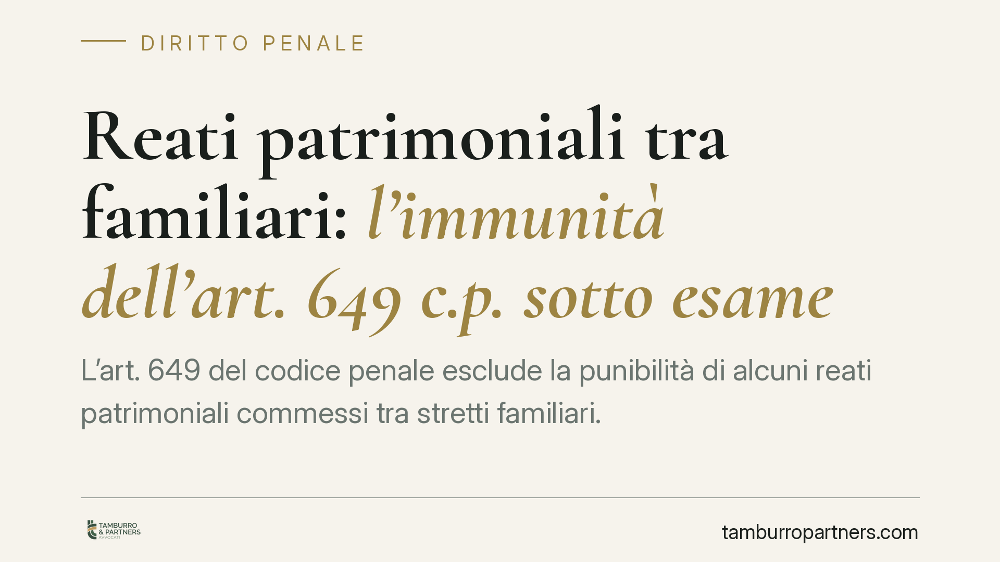
Reati patrimoniali tra familiari: l'immunità dell'art. 649 c.p. sotto esame
L'art. 649 del codice penale esclude la punibilità di alcuni reati patrimoniali commessi tra stretti familiari. Si discute se questa immunità sia ancora compatibile con la tutela d…
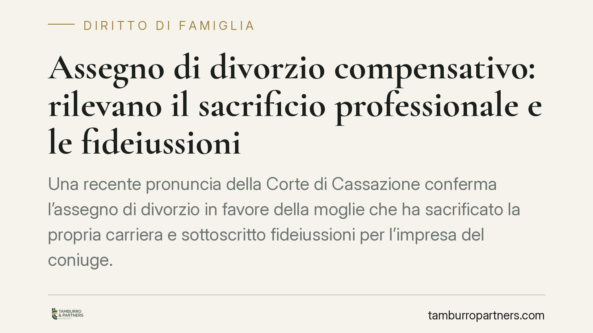
Assegno di divorzio compensativo: rilevano il sacrificio professionale e le fideiussioni
Una recente pronuncia della Corte di Cassazione conferma l'assegno di divorzio in favore della moglie che ha sacrificato la propria carriera e sottoscritto fideiussioni per l'impre…
Concessione abusiva di credito: il contratto è nullo o la banca risponde dei danni?
La banca che finanzia un'impresa già insolvente espone sé stessa a responsabilità verso i creditori, ma il contratto resta valido. Una recente pronuncia del Tribunale di Milano tor…
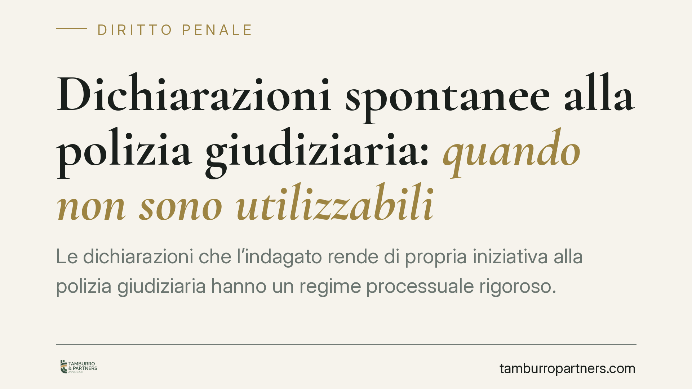
Dichiarazioni spontanee alla polizia giudiziaria: quando non sono utilizzabili
Le dichiarazioni che l'indagato rende di propria iniziativa alla polizia giudiziaria hanno un regime processuale rigoroso. Secondo un orientamento di legittimità ribadito di recent…
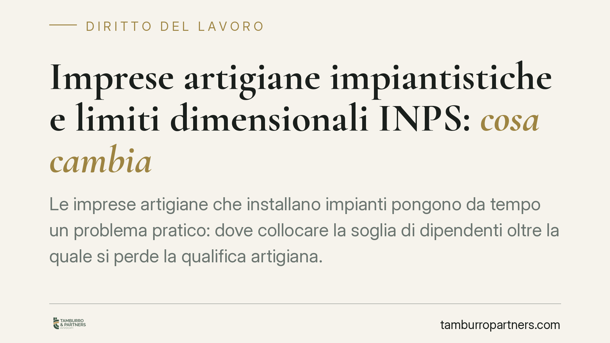
Imprese artigiane impiantistiche e limiti dimensionali INPS: cosa cambia
Le imprese artigiane che installano impianti pongono da tempo un problema pratico: dove collocare la soglia di dipendenti oltre la quale si perde la qualifica artigiana. La questio…
Divieto di cumulo Quota 100 e lavoro: cosa si restituisce in caso di violazione
Il pensionato con Quota 100 che lavora viola il divieto di cumulo e deve restituire quanto percepito indebitamente. Un orientamento giurisprudenziale punta a limitare la restituzio…
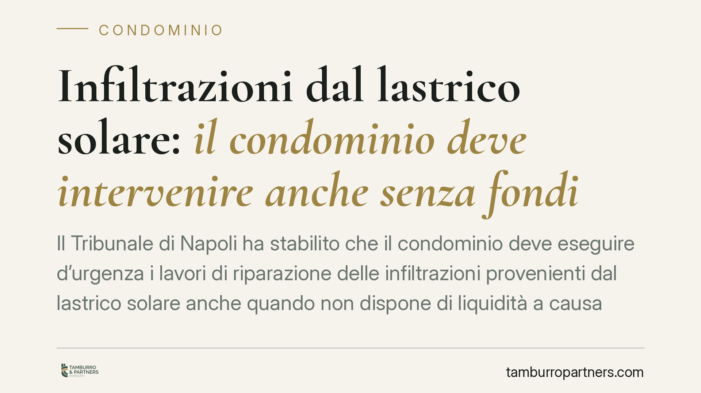
Infiltrazioni dal lastrico solare: il condominio deve intervenire anche senza fondi
Il Tribunale di Napoli ha stabilito che il condominio deve eseguire d'urgenza i lavori di riparazione delle infiltrazioni provenienti dal lastrico solare anche quando non dispone d…
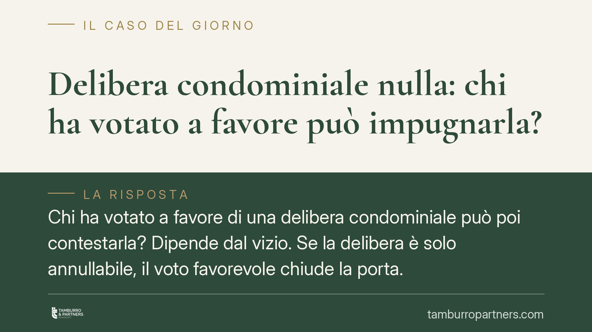
Delibera condominiale nulla: chi ha votato a favore può impugnarla?
Chi ha votato a favore di una delibera condominiale può poi contestarla? Dipende dal vizio. Se la delibera è solo annullabile, il voto favorevole chiude la porta. Se è nulla, la le…
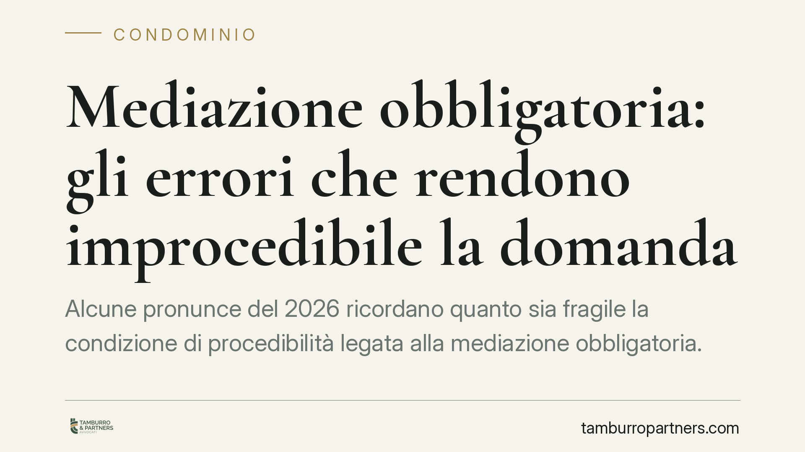
Mediazione obbligatoria: gli errori che rendono improcedibile la domanda
Alcune pronunce del 2026 ricordano quanto sia fragile la condizione di procedibilità legata alla mediazione obbligatoria. Oggetto della mediazione non coincidente con la citazione,…
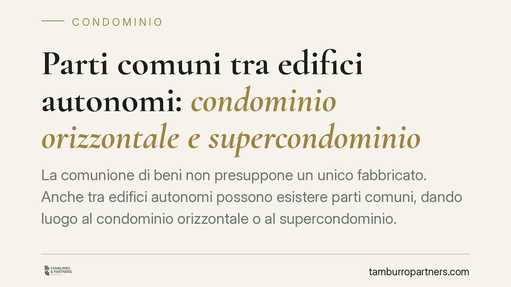
Parti comuni tra edifici autonomi: condominio orizzontale e supercondominio
La comunione di beni non presuppone un unico fabbricato. Anche tra edifici autonomi possono esistere parti comuni, dando luogo al condominio orizzontale o al supercondominio. Un re…
Bonus affitto per genitori separati: come la quota ereditata può escludere dal contributo
Si parla di un nuovo fondo per aiutare i genitori separati o divorziati che, non avendo l'assegnazione della casa familiare, devono sostenere un affitto. I dettagli operativi circo…
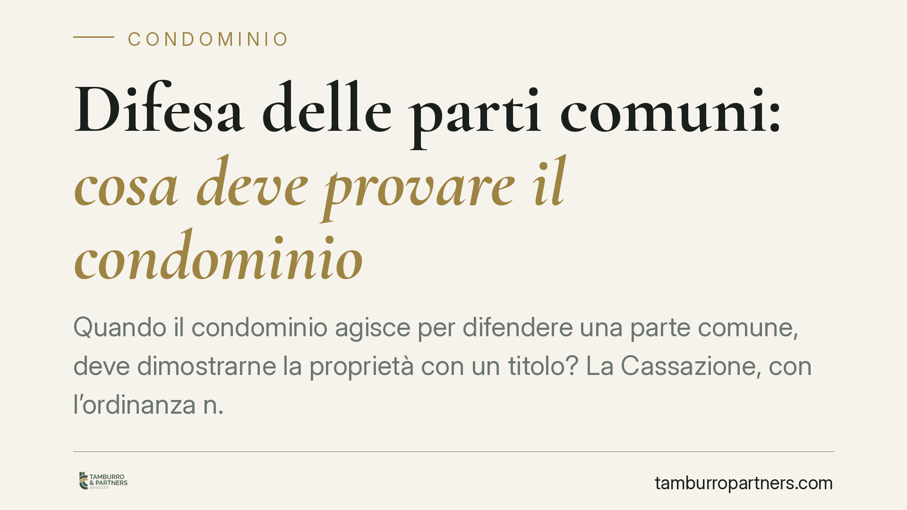
Difesa delle parti comuni: cosa deve provare il condominio
Quando il condominio agisce per difendere una parte comune, deve dimostrarne la proprietà con un titolo? La Cassazione, con l'ordinanza n. 16886 del 24 giugno 2025, risponde di no:…
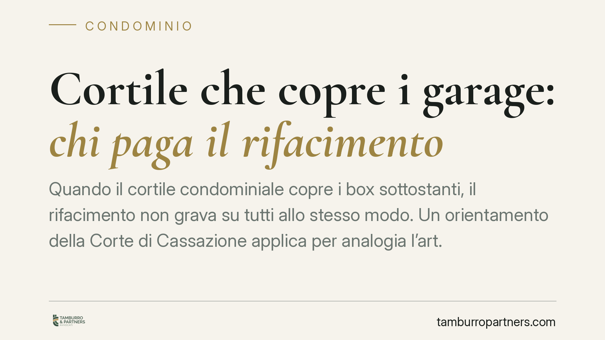
Cortile che copre i garage: chi paga il rifacimento
Quando il cortile condominiale copre i box sottostanti, il rifacimento non grava su tutti allo stesso modo. Un orientamento della Corte di Cassazione applica per analogia l'art. 11…
Bonus affitto per genitori separati: chi resta escluso dal contributo
È operativo il contributo destinato ai genitori separati o divorziati non assegnatari della casa familiare, con domande da presentare entro il termine fissato. Le Faq ministeriali …
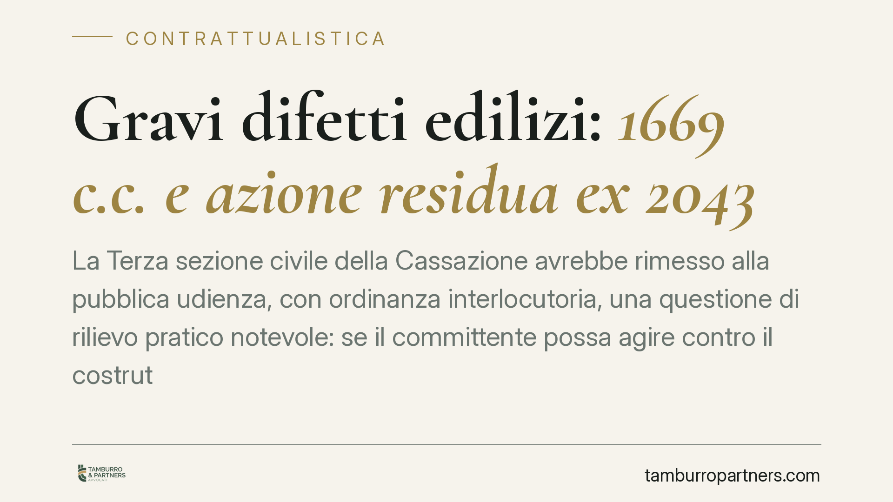
Gravi difetti edilizi: 1669 c.c. e azione residua ex 2043
La Terza sezione civile della Cassazione avrebbe rimesso alla pubblica udienza, con ordinanza interlocutoria, una questione di rilievo pratico notevole: se il committente possa agi…
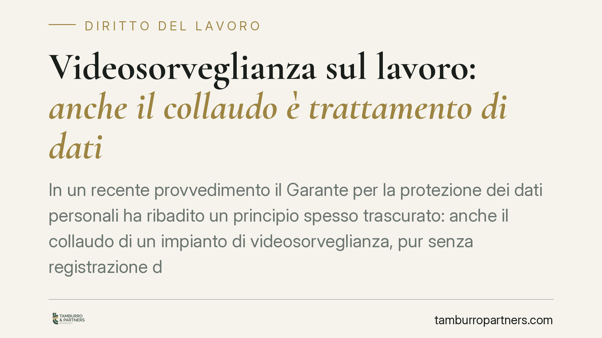
Videosorveglianza sul lavoro: anche il collaudo è trattamento di dati
In un recente provvedimento il Garante per la protezione dei dati personali ha ribadito un principio spesso trascurato: anche il collaudo di un impianto di videosorveglianza, pur s…
Contratti finanziari a distanza: le nuove tutele digitali dal 2026
Dal 19 giugno 2026 cambiano le regole per chi vende servizi finanziari a distanza. Il D.lgs. 209/2025 introduce un rafforzato diritto di recesso, un pulsante di cancellazione, il d…
Recesso dalla polizza vita e contratti finanziari a distanza: cosa cambia
Chi firma una polizza vita può ripensarci: l'art. 177 del Codice delle assicurazioni private riconosce un diritto di recesso entro trenta giorni, con restituzione dei premi. Parall…
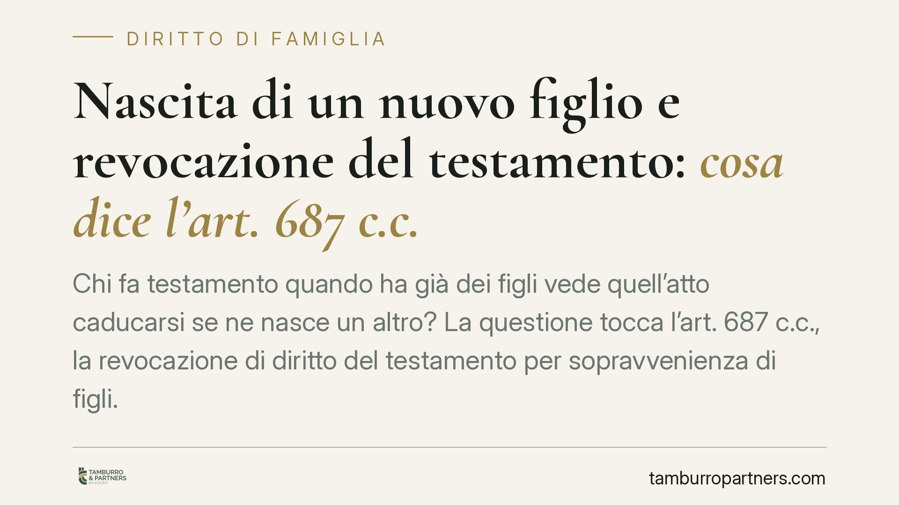
Nascita di un nuovo figlio e revocazione del testamento: cosa dice l'art. 687 c.c.
Chi fa testamento quando ha già dei figli vede quell'atto caducarsi se ne nasce un altro? La questione tocca l'art. 687 c.c., la revocazione di diritto del testamento per sopravven…
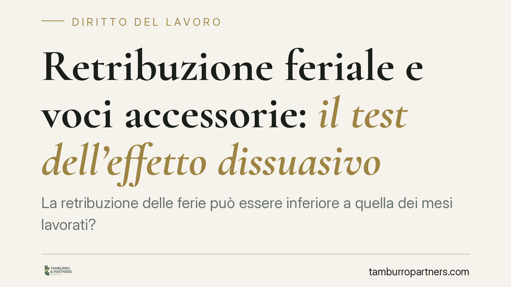
Retribuzione feriale e voci accessorie: il test dell'effetto dissuasivo
La retribuzione delle ferie può essere inferiore a quella dei mesi lavorati? La Corte di Cassazione torna sul tema e precisa che il datore può escludere alcune indennità accessorie…
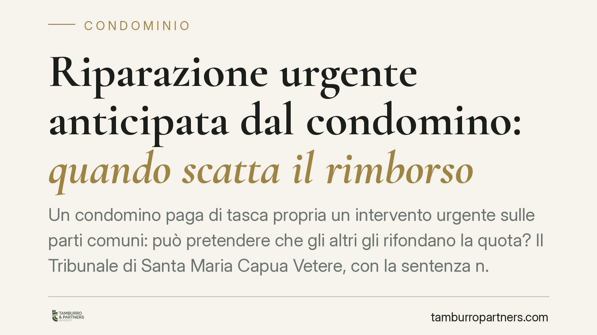
Riparazione urgente anticipata dal condomino: quando scatta il rimborso
Un condomino paga di tasca propria un intervento urgente sulle parti comuni: può pretendere che gli altri gli rifondano la quota? Il Tribunale di Santa Maria Capua Vetere, con la s…
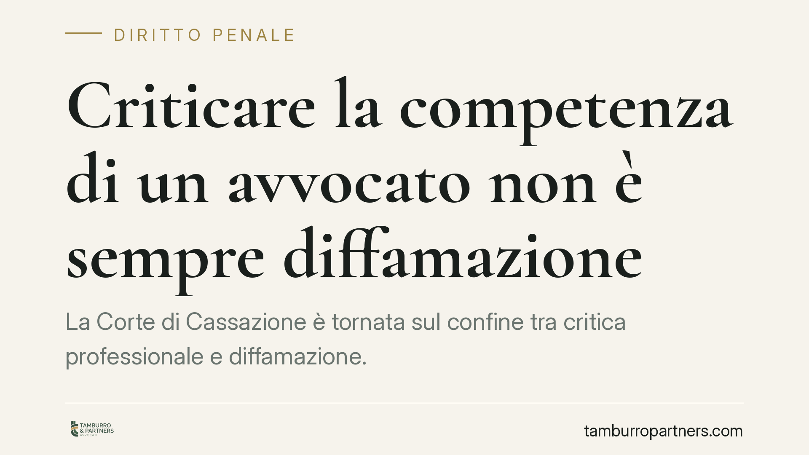
Criticare la competenza di un avvocato non è sempre diffamazione
La Corte di Cassazione è tornata sul confine tra critica professionale e diffamazione. Secondo il principio affermato, giudicare duramente la competenza di un avvocato non integra …

Verbale assembleare via email: quando è valido e chi prova la ricezione
La giurisprudenza chiarisce un punto pratico ricorrente: il verbale dell'assemblea condominiale inviato con email ordinaria è valido, a differenza dell'avviso di convocazione. Atte…

Il vicino estraneo al condominio non può impugnare le delibere assembleari
Chi non è condomino non può contestare le delibere assembleari con l'ordinaria impugnazione prevista dall'art. 1137 c.c. Al proprietario confinante resta solo la via della nullità,…

Patteggiamento estinto dopo cinque anni: niente recidiva
Con la sentenza 30791/2026 la Cassazione fissa un principio netto: trascorsi cinque anni dal passaggio in giudicato di un patteggiamento senza commettere nuovi delitti, il reato si…

Stalking: ritirare la querela basta a chiudere il procedimento?
Chi subisce atti persecutori spesso crede che ritirare la querela chiuda definitivamente la vicenda penale. Non è così. Quando lo stalking si intreccia con altri reati perseguibili…

Riconciliazione tra coniugi e ritorno della comunione dei beni
Dopo una separazione i coniugi tornano a vivere insieme: la comunione legale dei beni si ripristina da sola? La risposta è sì, ma con limiti precisi. Il Tribunale di Milano, con la…

Quota 100 e divieto di cumulo: la restituzione è proporzionale al reddito
Chi è andato in pensione con Quota 100 e ha svolto attività lavorativa vietata non perde l'intera annualità di pensione. Secondo un recente orientamento della Cassazione, la somma …

Revoca dell'amministratore: non basta l'irregolarità formale
Il Tribunale di Viterbo ha rigettato un ricorso per la revoca giudiziale di un amministratore di condominio. La decisione chiarisce un punto spesso frainteso: contestare una violaz…

Patto di famiglia: cedere l'azienda ai figli senza liti ereditarie
Il patto di famiglia è lo strumento con cui l'imprenditore trasferisce, già in vita, l'azienda o le quote a uno o più discendenti. Deroga al divieto di patti successori e mette al …